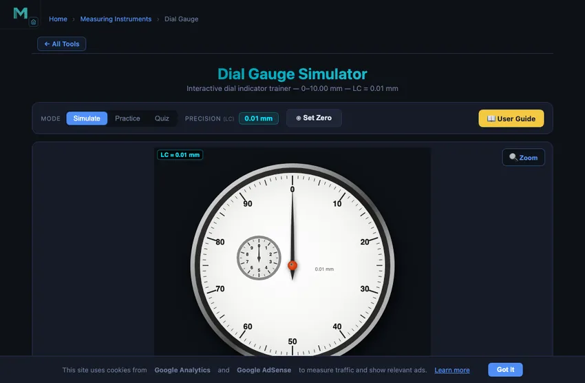

Dial Gauge Simulator
Interactive dial indicator trainer — 0–10.00 mm — LC = 0.01 mm
1 Overview
This dial gauge simulator (dial indicator simulator) is a free online tool for practising how to read a dial gauge with 0.01 mm resolution. The dial gauge converts small linear plunger movements into amplified rotary needle movement on a graduated dial, making it essential for checking runout, flatness, parallelism, and Total Indicator Reading (TIR) in precision engineering. This simulator covers the 0–10.00 mm range with a revolution counter sub-dial and a Set Zero function. Designed for CNC machining students, quality control trainees, and engineering education metrology learners.
2 Setting the Zero
The simulator opens in Simulate mode with the needle at a default position. To begin:
- Grab and drag the needle (the cursor turns into a hand when it is over the needle) or use the up/down arrow keys to move the plunger. The ▲▼ spindle buttons on the canvas also allow fine control. Scrolling over the canvas scrolls the page as usual.
- The info row shows the reading in mm, micrometres (μm), and inches, with live conversions.
- Press the Set Zero button (or the X key) to zero the gauge at the current position — all subsequent readings are relative to this datum.
- Use the Zoom button to magnify the dial face for reading between 0.01 mm divisions.
3 Taking a Reading
In Simulate mode the plunger moves freely. The main dial has 100 divisions — each division represents 0.01 mm. One full revolution of the main needle equals 1 mm of plunger travel. The small revolution counter sub-dial tracks how many complete millimetres the plunger has moved, so the total reading = sub-dial (whole mm) + main dial (0.01 mm divisions). This mode helps you understand the gear-amplified mechanism and practise reading both the main needle and revolution counter together.
The reading breakdown strip below the info row shows this addition live: Revolution counter (whole mm) + Main dial (divisions × 0.01) = Total reading. Watch it while you move the plunger to build the habit of never dropping the whole-millimetre part — the most common beginner mistake.
4 Practice & Quiz
Practice mode: The plunger is set to a random position. Read both the revolution counter and main dial, then type the total reading in mm into the input box. Click Check for instant feedback. Click New for another random reading. Your running score is tracked.
Quiz mode: Five questions test your dial gauge reading skills. After completing all questions, a results panel shows your score, star rating, and a question-by-question breakdown. Retake the quiz to improve your speed and accuracy.
5 Runout & TIR Demo
Switch to Runout mode to see how a dial gauge measures Total Indicated Runout (TIR) on a rotating shaft. A cylindrical journal spins under the contact tip; because its rotation axis (the cyan cross-hair) is offset from its geometric centre, the tip — and therefore the needle — sweeps up and down once per revolution.
- Press Spin shaft to start rotation; press again to pause at any angle.
- Drag the Eccentricity slider (0.05–0.50 mm) to set how far off-centre the shaft runs.
- The bar tracks the live Min and Max readings and computes TIR = Max − Min, which equals exactly 2 × eccentricity.
- Press Reset to zero the captured swing and return the shaft to its start angle.
This is exactly how a machinist checks shaft or chuck runout on a lathe: mount the gauge, rotate the work slowly, and read the total needle swing.
6 Set Zero & Relative Measurement
Dial gauges are almost always used for comparative (relative) measurement rather than absolute measurement. The Set Zero function lets you:
- Pre-load the plunger against a reference surface or gauge block.
- Press Set Zero (or X key) to reset the display to 0.00 mm.
- Move to the workpiece — the reading now shows the deviation from the reference.
This is exactly how Total Indicator Reading (TIR) is measured: zero on one side, read the total swing. Practising zeroing in this simulator builds the habit needed for real surface plate inspection work.
7 Workshop Tips
- Always pre-load the plunger by at least 1–2 revolutions before zeroing — this ensures the plunger has travel in both directions for detecting positive and negative deviations.
- When checking runout, rotate the workpiece slowly and note the maximum and minimum readings — TIR = max − min.
- Mount the dial gauge rigidly using a magnetic stand or clamp — any vibration or loose mounting introduces false readings.
- In the simulator, practise reading both the main needle and the revolution counter sub-dial together to avoid dropping whole millimetres from your reading.
How to Read a Dial Gauge — Online Dial Indicator Practice

A dial gauge (also called a dial indicator or dial test indicator) is a precision instrument used to measure small linear displacements, runout, flatness, and parallelism in machining, quality control, and precision engineering. This free online simulator covers 0–10.00 mm with a 0.01 mm least count, including a revolution-counter sub-dial.
How to Read a Dial Gauge — Step by Step
A dial gauge has two scales: (1) Main dial with 100 divisions, each = 0.01 mm — one full revolution = 1 mm. (2) Revolution counter sub-dial showing complete revolutions (whole millimetres). To read: note the sub-dial value in whole mm, then add the main dial reading. Example: sub-dial = 3, main dial = 47 → reading = 3.47 mm.
Dial Gauge Specifications at a Glance
| Parameter | Typical Value | Notes |
|---|---|---|
| Least count (resolution) | 0.01 mm | 0.001 mm on high-precision models |
| Main dial divisions | 100 | One full revolution = 1.00 mm |
| Measuring range | 0–10 mm | Plunger types up to 25–50 mm |
| Revolution counter | 0–9 (whole mm) | Counts complete needle turns |
| Typical accuracy | ±0.01 mm | Per ISO 463 / ASME B89.1.10M |
| TIR (runout) | Max − Min | Equals 2 × shaft eccentricity |
Set Zero (Zeroing a Dial Gauge)
Before taking measurements, a dial gauge must be pre-loaded and zeroed against a reference surface. This simulator includes a Set Zero function — press X or the Set Zero button — so students can practise the zeroing procedure, which is essential for surface plate inspection, lathe runout checking, and CMM setup work.
Dial Gauge Applications in Engineering
- Checking shaft runout and eccentricity on a lathe or grinder
- Measuring surface flatness and parallelism on a surface plate
- Setting up milling machine vices and fixtures
- Verifying bore diameter with a bore gauge attachment
- Slip gauge (gauge block) calibration — included in this simulator's practice mode
The Two Uses Every Machinist Knows
Dial gauges live mostly in two situations, and a working machinist reaches for one a dozen times a day.
First, runout checking. Mount the gauge so its contact tip touches a rotating shaft. Spin the shaft slowly. The dial needle traces the eccentricity — total indicated runout (TIR) is the difference between maximum and minimum readings. A precision-ground shaft should show under 0.01 mm TIR; anything over 0.05 mm means bent, worn, or improperly chucked. The same technique checks lathe chuck runout, milling spindle runout, and bearing journal concentricity.
Second, parallelism on a surface plate. Mount the gauge on a height-gauge column. Slide it across a surface that should be parallel to the plate. Variation in the dial reading shows the angular deviation. ISO 286 tolerance grades for machined surfaces typically allow 0.01−0.02 mm of flatness per 100 mm; the dial gauge catches deviations a quarter of that.
Lever-Type vs Plunger-Type — Two Different Tools
The instrument in this simulator is the plunger-type dial indicator. Its sibling is the lever-type dial test indicator (DTI), with a hinged contact arm rather than an in-line spindle. Both achieve about the same precision but suit different geometries:
- Plunger type. Long travel (10−25 mm). Direct push-in reading. Best for slow-moving displacements: surface plate work, gauge-block stacks, simple runout checks where the contact direction stays normal to the surface.
- Lever (test) type. Short travel (about 0.8 mm). Hinged tip can sweep into tight features — cylinder bores, inside corners of fixtures, between gear teeth. The standard tool for setting up a milling vice parallel to the X-axis: sweep the DTI across the jaw and adjust until the reading stays constant.
Calibration and Standards
- ISO 463:2006 — Geometrical product specifications (GPS) — Dimensional measuring equipment — Design and metrological characteristics of mechanical dial gauges.
- ASME B89.1.10M — Dial Indicators (For Linear Measurements).
- JIS B 7503 — the Japanese standard, often referenced for Mitutoyo instruments.
- Calibration interval. 6 to 12 months for shop-floor use, against a class-1 gauge-block set at five points across the range.
Explore Related Simulators
If you found this Dial Gauge simulator helpful, explore our Height Gauge simulator, Vernier Caliper simulator, Micrometer Screw Gauge simulator, and Lathe Machine simulator for more hands-on practice.
3D Model — Maintenance: Cylinder Bore & Shaft Runout Gauge
Interactive 3D model of this apparatus. Pick a component on the right, then drag to rotate · scroll to zoom · right-drag to pan.